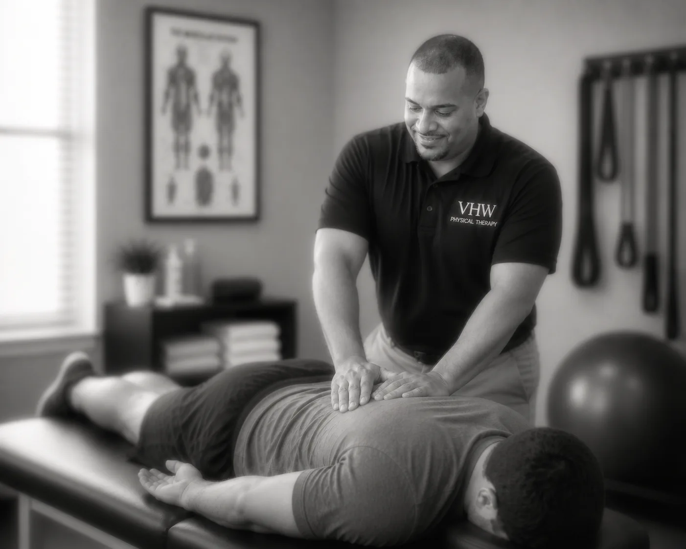

Doctor of Physical Therapy · U.S. Navy Veteran

Dr. Bruce Valencia · DPT · CLT · ISSA-CPT · ISSA-SSC
Recovery and training usually happen in two places, with two different people. Here they happen with one.
Working with a doctor of physical therapy who also coaches means one person carries you from recovery through to training, without the handoff where progress usually stalls.
Read his story →